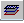

Создание слоев

1) Нажмите на кнопку "Слои", панели инструментов "Редактор диалогов"
2) По умолчанию всегда присутствует один слой "Основной", добавьте свои слои и назовите их. (например Слой1, Слой2)
3) На форме элемента выделите нужные вам объекты и через контекстное меню [Поместить] -> [ИмяСлоя]
мы поместим эти объекты на один из слоев. (например Слой1)
4) Теперь выделите остальные объекты и точно так же через контекстное меню [Поместить] -> [ИмяСлоя]
поместим эти объекты на следующий слой. (например Слой2)
5) Нажмите на кнопку "Слои", панели инструментов "Редактор диалогов", и так мы видим три колонки:
Первая колонка - отвечает за отображение (глаз - если объект отображается)
Вторая колонка - показывает нам активный слой (карандаш - если слой активен)
Третья колонка - имя слоя.
нам нужно:
1. Сделать активным слой "Основной"
2. Сделать отображенным слой "Основной" и "Слой1"
6)Теперь мы опишем программно, в теле модуля элемента, отображение слоев.
Форма.ИспользоватьЗакладки(1); //Установить режим использования закладок в форме (1-вкл. закладки) (2-выкл. закладки)
Форма.Закладки.ДобавитьЗначение("Слой1", "Ф.И.О Сотрудника"); //Добавить значение в список (<значение>, <строка>)
Форма.Закладки.ДобавитьЗначение("Слой2", "Данные сотрудника"); //Добавить значение в список (<значение>, <строка>)
Форма.ИспользоватьСлой("Основной,Слой1", 2); //отображать слой (<ИмяСлоя> <Режим>)
7)Теперь мы опишем программно, в теле модуля элемента, работу слоев с помощью предопределенной процедуры.
Процедура ПриВыбореЗакладки(НомерЗакладки, ЗначениеЗакладки)
Если ЗначениеЗакладки = "Слой1" Тогда
Форма.ИспользоватьСлой("Основной,Слой1", 2); //отображать слой "Основной" и "Слой1"
ИначеЕсли ЗначениеЗакладки = "Слой2" Тогда
Если Выбран() = 0 Тогда //если этот элемент не выбран из списка, а только создаётся
Если Вопрос("Записать контрагента?", "Да+Нет") = "Да" Тогда
Записать();
Иначе
СтатусВозврата(0); // Все отменить (уничтожить значения)
Возврат;
КонецЕсли;
КонецЕсли;
Форма.ИспользоватьСлой("Основной,Слой2", 2); //отображать слой "Основной" и "Слой2"
КонецЕсли;
КонецПроцедуры
Created with the Personal Edition of HelpNDoc: Write eBooks for the Kindle